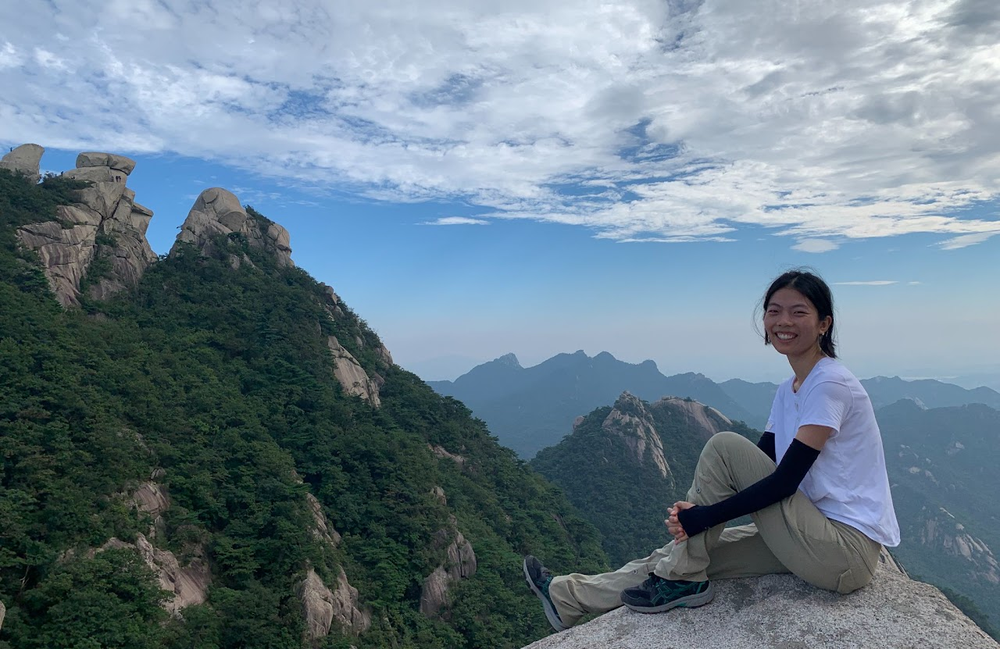

Wanchun Shen (Rosie)
Email: w35shen@gmail.com

I will be a Szegö Assistant Professor at Stanford University 2026-2027.
I graduated from Harvard University under Prof. Mihnea Popa.
Before that, I was an undergraduate student at the University of Waterloo. There I worked on math problems in several different areas with Professors Kathryn Hare, Kevin Hare and Matthew Satriano.
Research interests
I am interested in singularities in algebraic geometry, Hodge theory and algebraic K-theory. In particular, I am trying to understand the higher rational and higher Du Bois singularities that were introduced recently as a refinement of rational and Du Bois singularities. My recent project aims to study the homotopy invariance of the algebraic K-groups using recent progress on higher Du Bois singularities.